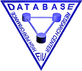
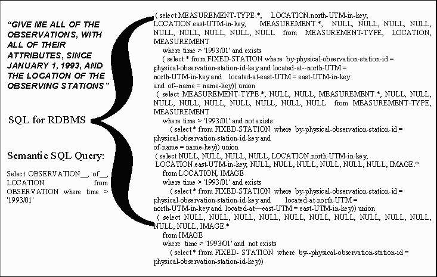

Demonstration

Presented at the VLDB 2000 -- Very Large Databases Conference
Naphtali Rishe, Jun
Yuan, Rukshan Athauda, Xiaoling Lu, Xiaobin Ma, Alexander Vaschillo,
Artyom Shaposhnikov, Dmitry Vasilevsky, Shu-Ching Chen
High-performance Database Research
Center
School of Computer Science
Florida International University
University Park, Miami, FL 33199
SEMANTIC SQL
|
|
|
|
|
|
Semantic SQL reduces program sizes:

Semantic SQL is in standard ODBC/JDBC protocols and therefore is compatible with most third-party tools, while dramatically decreasing the effort of the user working via such tools, whether posing a direct SQL query or designing a query via GUI clicks (the number of GUI clocks is roughly proportional to the size of the SQL query generated by the tools in response to the user's clicks):
Demonstration
1. Introductional viewgraph presentation: powerpoint or html-gif.
2. Demonstration (the demonstration comparatively accesses two equivalent
databases and you may want to open their respective schemas (in separate
windows) here: semantic
and relational)
Walk through of the whole demo
session with screen shots. Or directly jump to any section
that you are interested in:
| I: | Semantic Wrapper: ODBC/JDBC Middleware between user tools (e.g. MS Access QBE) and Relational Databases for empowerment of end-user of legacy databases |
| II: | Reverse Engineering of Legacy Databases: SemanticWrapper Knowledge Base Tool |
| III: | Query Coordinator (CORBA) |
| IV: | Semantic DBMS Sem-ODB: Semantic SQL via own GUI and via MS Access QBE |
© Copyright 2000, Naphtali Rishe and FIU-HPDRC
Technology protected by U.S. Patents